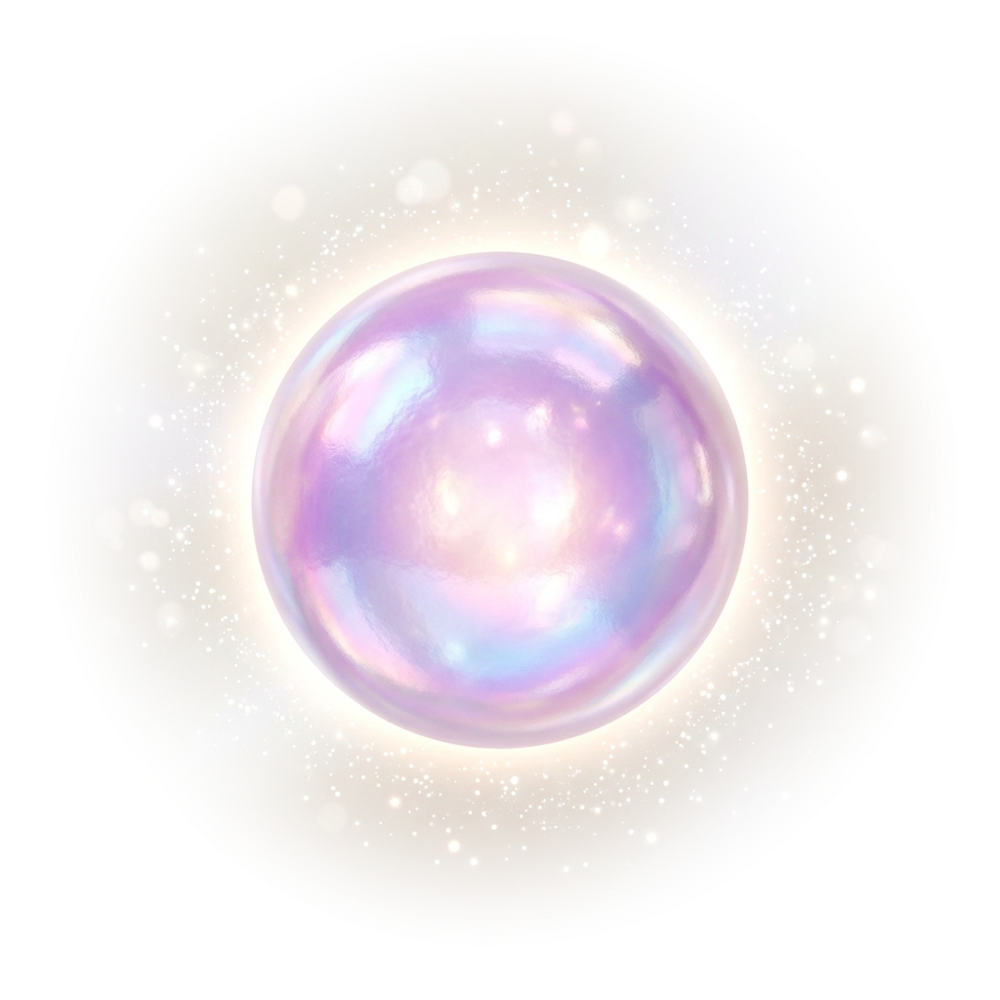

60
초 리셋
이거면 충분해
말씀
한 구절 읽기
기도
눈 감고 천천히 주기도문
고요
거룩한 이름 하나에 머물기
호흡
같이 숨 쉬기
감사
감사한 것 하나 떠올리기
롤·유튜브 켜기 전이야?
오늘,
감사한 것
.
이거면 충분해

들이쉬고…
이거면 충분해
이거면 충분해
다른 구절
눈 감고 외워도, 천천히 읽어도 좋아.
이거면 충분해
소리 끄기
오늘 머물
한 단어
,
하나만 골라.
마음 안 끌리면, 다른 단어
눈을 감고, 60초 동안 이 단어에 가만히 머물러 봐.
딴 생각이 나면, 이 단어로 살며시 돌아와.
이거면 충분해
이거면 충분해.
지금 가볍게 시동 걸 거,
딱 하나만.
마음 안 끌리면, 다른 거
오늘은 여기까지 — 그것도 좋아
3:00
3분. 이거 하나면 돼.
이거면 충분해
이제 가서 즐겨도 돼.
근데 3분만, 딱 하나 먼저 해볼래?
3분 먼저 해볼래
그냥 갈래
해냈다. 진짜로.
닫아도 성공이야.
한 가지만 더 해볼까?
방금 거 한 번 더
지금까지 하늘에 올린 진주
0
오늘 이끌린 것
처음으로
닫기
설정
눈 감고 쓸 때 신호
호흡·기도 중 부드러운 진동으로 흐름을 알려줘. 알람 아냐.
탭 소리
유리 진주처럼 맑고 작은 소리. 알람 아냐 — 누를 때만 살짝.
잔잔한 음악
은은한 배경 음악. 화면을 옮겨도 끊기지 않아.
폰 홈 화면에 추가해두면 오프라인에서도, 더 빠르게 열려.